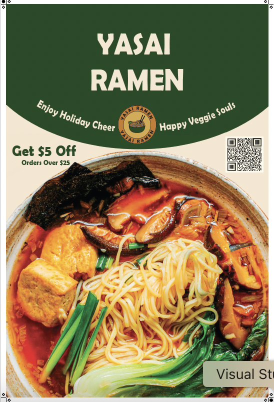
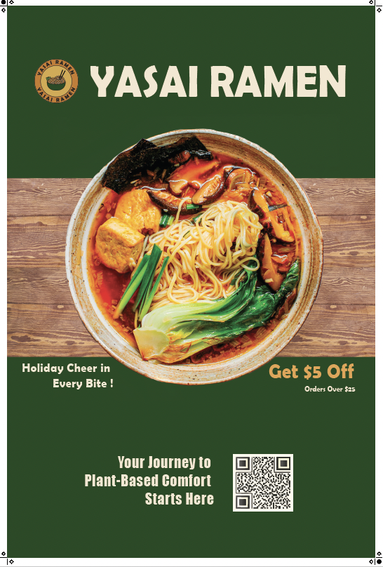
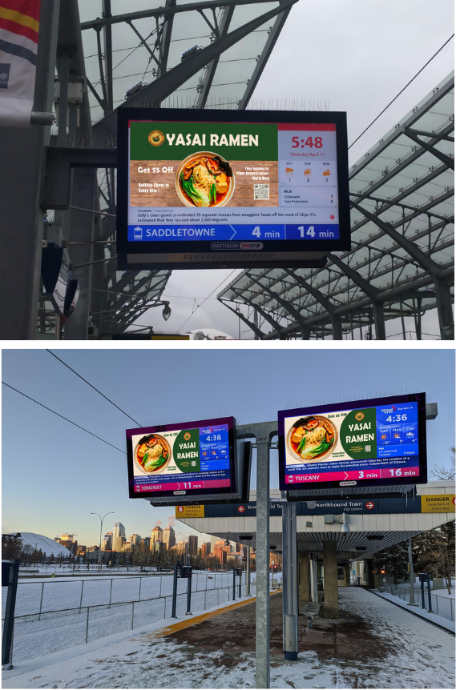
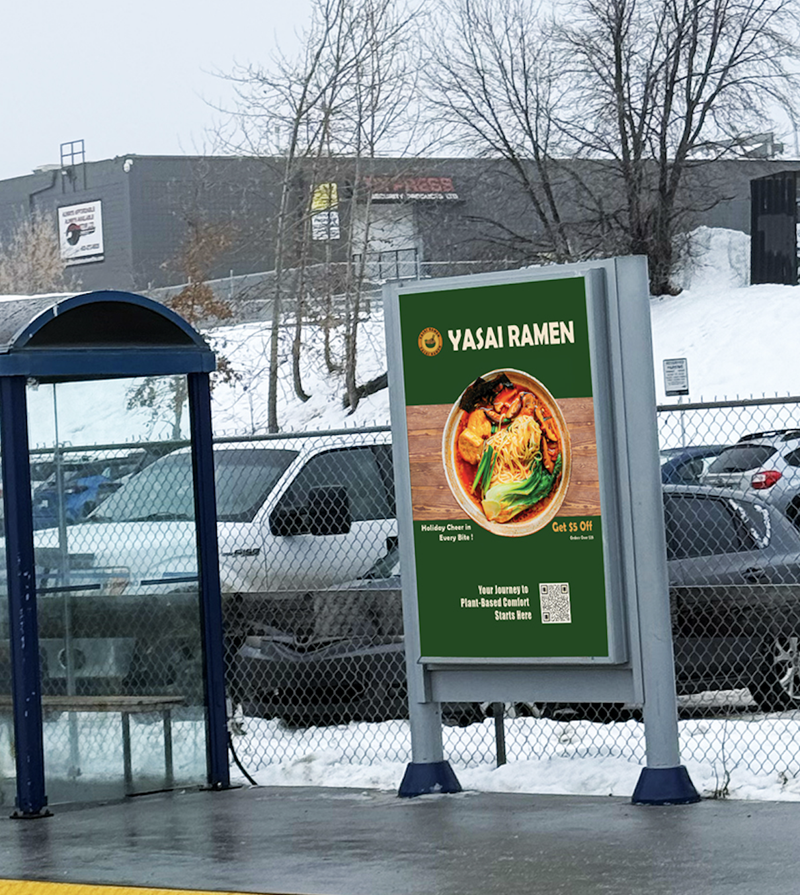

YASAI Ramen
Core Competencies Applied
Marketing Strategy
Developing a "Green Lifestyle" transit campaign, focusing on the 3-second rule for high-speed visual impact and brand positioning.
Brand Identity
Aligning "Green Lifestyle" values with a premium, plant-based dining experience.
Transit Poster Design
Concept development for high-traffic public spaces
Visual Communication
High-contrast layouts designed for quick readability from a distance.
Visual Journey



